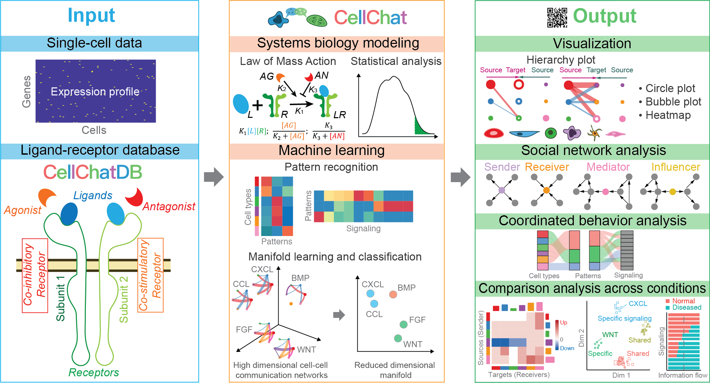
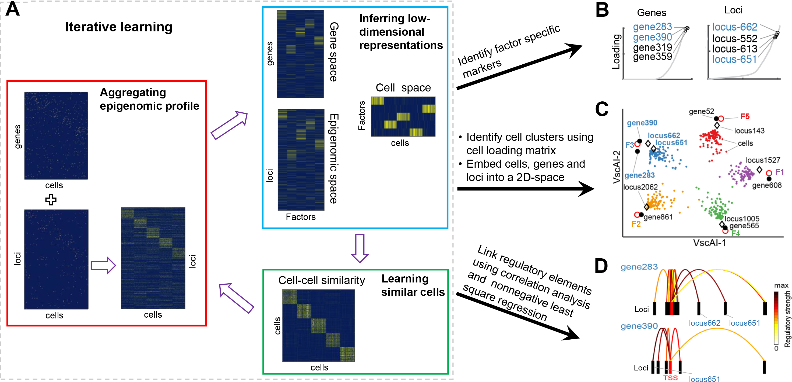
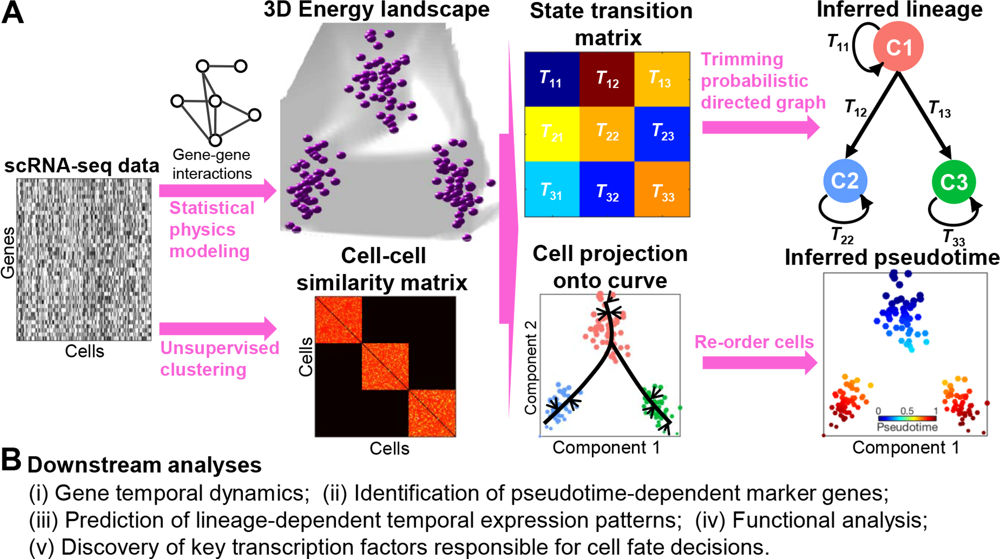

Cherry Blossom Festival in Wuhan University happens around late March
Climb the stairs to get to our office

CellChat: open source R toolkit for cell-cell communication inference and analysis

scAI: computational method for integrating single-cell multi-omics data
